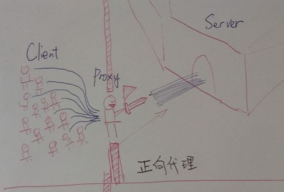
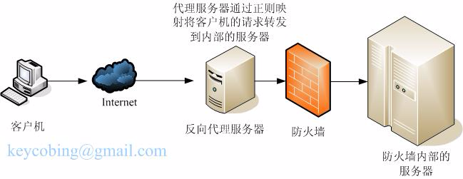
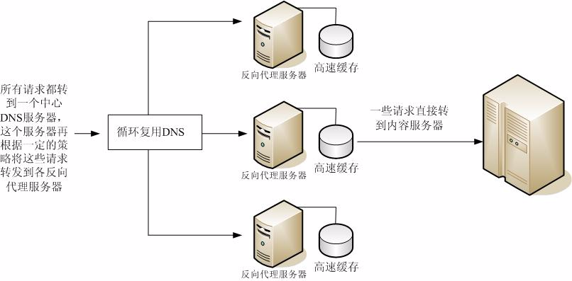

proxy_pass的目标地址，默认不带/，表示只代理域名，url和querystring部分不会变（把请求的path拼接到proxy_pass目标域名之后作为代理的URL）
如果在目标地址后增加/，则表示把path中location匹配成功的部分剪切掉之后再拼接到proxy_pass目标地址
比如请求 /a/b.html
location /a {
proxy_pass http://server;
}
location /a {
proxy_pass http://server/;
}
如上两个匹配成功后，实际代理的目标url分别是 http://server/a/b.html (把/a/b.html拼接到http://server之后) http://server/b.html (把/a/b.html的/a去掉之后，拼接到http://server/之后)

正向代理中，proxy和client同属一个LAN；它是代理客户端，为客户端收发请求，使真实客户端对服务器不可见。其是从内到外。 反向代理中，proxy和server同属一个LAN；它是代理(v)服务器，为服务器收发请求，使真实服务器对客户端不可见。"反向"这个词在这儿的意思其实是指方向相反，即代理把来自外网client的请求forward到内网server，从外到内。 因为服务对象和自身角色不同，所以刚好是相反的。

可以在一个组织内使用多个代理服务器来平衡各 Web 服务器间的网络负载。在此模型中，可以利用代理服务器的高速缓存特性，创建一个用于负载平衡的服务器池。此时，代理服务器可以位于防火墙的任意一侧。如果 Web 服务器每天都会接收大量的请求，则可以使用代理服务器分担 Web 服务器的负载并提高网络访问效率。
对于客户机发往真正服务器的请求，代理服务器起着中间调停者的作用。代理服务器会将所请求的文档存入高速缓存。如果有不止一个代理服务器，DNS 可以采用“循环复用法”选择其 IP 地址，随机地为请求选择路由。客户机每次都使用同一个 URL，但请求所采取的路由每次都可能经过不同的代理服务器。
